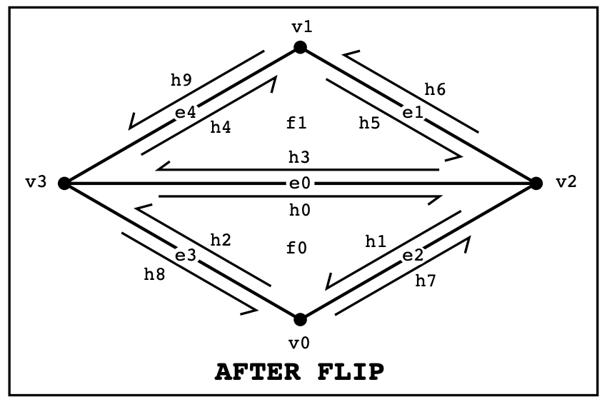

Overview
In this project, we first implemented the Bezier curves with 1D de Casteljau subdivision and Bezier surfaces with separable 1D de Casteljau. With that, we are able to drag the control points of the Bezier curves and see how the curve changes, as well as rendering a teapot. We then implemented various low level operations with triangle meshes using the half-edge data structure. In particular, we implemented the computation of area-weighted vertex normals to make the shading smooth, edge flip and edge split, and loop subdivision for mesh upsampling.
Putting together, we can load in a .bzc file and play around with the control points. We can also create interesting polygon mesh, save as a .dae file, and load it into the meshedit program and subdivide it to smooth it out. This enables complex shape design with simple meshes.
We have learned a lot of intersting things from completing the project. First, we see how the de Casteljau subdivision algorithm is used in drawing Bezier curves and surfaces. We also see how the half-edge data structure is used to represent polygon meshes and how it can be used to implement various mesh operations. Last but not least, we see how the subdivision algorithm can be used to smooth out the mesh and create interesting shapes.
Section I: Bezier Curves and Surfaces
Part 1: Bezier Curves with 1D de Casteljau Subdivision
Briefly explain de Casteljau's algorithm and how you implemented it in order to evaluate Bezier curves.De Casteljau's algorithm is a recursive method for drawing/evaluating points on a Bezier curve. Given a set of control points that define the Bezier curve, the algorithm recursively connects the consecutive points and subdivide each line segment with the ratio t:(1-t) to get new intermediate points. The algorithm continues this subdivision process until it reaches the final point on the curve. And as the parameter t ranges from 0 to 1, the final point on the curve will move along the curve.
The implementation is quite straightforward. Given a list of control points, we just need to recursively find the intermediate points until we reach the final point. A psuedocode is explained below:
- Given a list of $n$ control points, we recursively call the following function $n-1$ times:
- The function takes in $k$ points $P_0, P_1, ..., P_k$ and $k-1$ points $Q_0, Q_1, ..., Q_{k-1}$.
- For each segment $P_i, P_{i+1}$, $Q_i = (1-t)P_i + tP_{i+1}$.
We create a Bezier curve with 6 control points to help evaluate our implementation (named curve3.bcz). Shown below is that Bezier curve.
We visualize de Casteljau's algorithm at various levels below (blue points). The point on the Bezier curve is red. Shown in green is the Bezier curve.
|
|
|
|
|
|
|
|
Here is an image of the Bezier curve from above, but with the points moved and the value of t being different.
Part 2: Bezier Surfaces with Separable 1D de Casteljau
Briefly explain how de Casteljau algorithm extends to Bezier surfaces and how you implemented it in order to evaluate Bezier surfaces.
De Casteljau's algorithm can be extended to evaluate points on Bezier surfaces, which are defined by a set of control points arranged in a rectangular grid. Given a Bezier surface defined by a set of $n\times n$ control points and parameters $(u, v)$, we can use the 1D de Casteljau algorithm to first find the control point at position u for each row, and then use the 1D de Casteljau algorithm again to the find the position of the point at position v. Thus, this just involves calling the evaluate1D function $n+1$ times, where evaluate1D is basically the same function we implemented in Part 1 but just for 3D points instead of 2D points.
The implementation is also straightforward. A psuedocode is explained below:
- Given a grid of $n \times n$ control points, we first loop through the rows with parameter u:
- For $i$ in $1:n$
- column_points[i] = evaluate1D([$P_{i0}, ..., P_{in}$], $u$).
- Return evaluate1D(column_points, $v$)
Here is an image of a teapot using Bezier surfaces.
Section II: Triangle Meshes and Half-Edge Data Structure
Part 3: Area-Weighted Vertex Normals
Briefly explain how you implemented the area-weighted vertex normals.Area-weighted vertex normals are a way to compute the normal vector at each vertex of a 3D mesh based on the neighboring triangles. The idea is to compute a weighted average of the normal vectors of the triangles that share each vertex, weighted by the area of each triangle. This gives a smooth normal vector field that can be used for shading and other purposes.
Here is how we implemented area-weighted vertex normals with the half-edge data structure:
- Given a vertex:
- weighted_sum_normal = 0
- For each triangle incident to the vertex (looping the triangles using
HalfedgeCIter::twin()->next()) - Get the vector of the 3 sides (looping the triangles using
HalfedgeCIter::next()). - Compute the normal vector of the triangle using cross product.
- Compute the area of the triangle using cross product.
- weighted_sum_normal += normal * area
- Normalize the resulting vector.
- Collect the elements
- This involves getting
HalfedgeIter h0~h9,VertexIter v0~v3,Edge e0~e4, andFace f0 and f1. - Allocate new elements
- Nothing needs to be done for edge flipping.
- Reassign elements
- We specify every pointer for every element, even if it didn’t change, as shown in the above diagrams.
- Delete unused elements
- Nothing needs to be done for edge flipping.
- Collect the elements
- This involves getting
HalfedgeIter h0~h9,VertexIter v0~v3,Edge e0~e4, andFace f0 and f1. - Allocate new elements
- We need to add
HalfedgeIter h10~h15,VertexIter v4,Edge e5~e7, andFace f2 and f3. - Reassign elements
- We specify every pointer for every element, even if it didn’t change, as shown in the above diagrams.
- Delete unused elements
- Nothing needs to be done for edge splitting.
Here are two screenshots comparing teapot shading with and without vertex normals.
|
|
|
The Phong shading is noticably smoother than the default flat shading.
Part 4: Edge Flip
We follow the suggestions and starting code given by this reference: http://15462.courses.cs.cmu.edu/fall2015content/misc/HalfedgeEdgeOpImplementationGuide.pdf.
In particular, we drew out the diagrams for the two triangles before and after edge flipping, and labeled all edges, half-edges, vertices, and faces. We follow the 4 steps suggested by the reference to implement the edge flip operation:
|
|

|
Here are screenshots of the teapot before and after some edge flips.
|
|
|
For debugging, we used the provided check_for() function for all edges, half-edges, vertices, and faces to make sure all pointers are correct. We then use the program to visualize the mesh before and after the edge flip operation to ensure that the resulting mesh is still valid and does not have any topological errors.
Part 5: Edge Split
|
|

|
Similar to Part 4, we drew out the diagrams for the two triangles before and after edge splitting, and labeled all edges, half-edges, vertices, and faces. We follow the 4 steps suggested by the reference to implement the edge split operation:
Here are screenshots of the teapot before and after some edge splits.
|
|
|
Here are screenshots of the teapot before and after some edge splits and flips.
|
|
|